```{r}
#| eval: false
#| warning: false
library(tidyverse)
table_01 <- read_csv("data/01_participant_metadata.csv")
table_02 <- read_csv("data/02_visit_clinical_measurements.csv")
```R workshop
Learn how to use RStudio and the
tidyversefor data exploration
Slides: Intro to RStudio, Quarto, and R
Download the instructional dataset:
The main data set for use in lectures is split into 5 tables. The idea of this dataset is that there is a randomized controlled trial of a drug aimed at reducing HIV risk by reducing inflammation. There were 23 participants in the placebo arm and 21 in the treatment arm. There were 3 visits for the trial – baseline (before any treatment occurred), week_1 (1 week after treatment) and week_7 (7 weeks after treatment). At each time point inflammation was measured using luminex (elisa_cytokines table) and immune cells counts were measured from a pap-smear (flow_cytometry table).
pid – participant id
time_point – “baseline”, “week_1”, or “week_7” arm – “treatment” or “placebo”
sample_id – the “wet-lab” sample id associated with this timepoint
pid - participant id
arm - “treatment” or “placebo”
smoker - “yes” or “no”
age – age in years
education – 4 options (“less than grade 9”, “grade 10-12, not matriculated”, “grade 10-12, matriculated”, “post-secondary”)
sex – all participants are “Female”
pid – particpant id
time_point – “baseline”, “week_1”, or “week_7”
arm – “treatment” or “placebo”
nugent_score – Nugent Score, a number from 0-10. 0-3 is no BV, 4-6 is intermediate BV, and 7-10 is BV . crp_blood – decimal number representing C-reactive protein blood test (CRP) ph – vaginal pH
sample_id - the “wet-lab” sample id associated with this timepoint
cytokine - “IL-1a”, “IL-10”, “IL-1b”, “IL-8”, “IL-6”, “TNFa”, “IP-10”, “MIG”, “IFN-Y”, “MIP-3a”
conc – decimal number representing concentration
limits – either “within limits” or “out of range”
sample_id - the “wet-lab” sample id associated with this timepoint
All other columns – the integer count of this type of cell in this sample
cd4_t_cells might best be analyzed as a proportion of cd3_t_cells… ### Read in data
Data is often in tables, and the easiest way to store tabular data is in csv or tsv format.
csv - comma separated values
tsv - tab separated values
to read in data stored this way use read_csv(filename) or read_tsv(filename)
Exercise 1: Data wrangling and simple manipulations
In this worksheet, we will discuss how to perform basic data manipulations, such as filtering data rows that meet certain conditions, choosing data columns, and arranging data in ascending or descending order.
We will be using the R package, tidyverse for the data manipulation functions %>%, filter(), select(), arrange(), count(), and mutate().
The pipe (%>%, read: “and then”)
When writing complex data analysis pipelines, we frequently use the pipe operator %>% to move data from one analysis step to the next. The pipe is pronounced “and then”, and it takes the data on its left and uses it as the first argument for the function on its right.
For example, to see the first few lines of a dataset, we often write head(data). Instead, we can write data %>% head().
Try this yourself. Write code that displays the first few lines of table_01, using %>% and head():
table_01 ___ head()Choosing data rows
The function filter() allows you to find rows in a dataset that meet one or more specific conditions. The syntax is data %>% filter(condition), where condition is a logical condition. For example, filter(x > 5) would pick all rows for which the value in column x is greater than 5.
Below, write code to pick all measurements from the placebo arm in table_02 :
table_02 %>%
filter(___)Filtering for multiple conditions
You can also state multiple conditions, separated by a comma. For example, filter(x > 5, y < 2) would pick all rows for which the value in the column x is greater than 5 and the value in the column y is less than 2. Note that the conditions are combined via logical and, both need to be satisfied for the row to be picked.
To try this out, pick all measurements at baseline for the placebo arm in table_02 :
table_02 %>%
filter(time_point == ___, arm == ___)Choosing data columns
The function select() allows you to pick specific data columns by name. This is frequently useful when a dataset has many more columns than we are interested in at the time. For example, if we are only interested in the participants’ education, and sex, we could select these three columns:
table_01 %>%
select(education, sex)# A tibble: 44 × 2
education sex
<chr> <chr>
1 grade 10-12, matriculated Female
2 grade 10-12, matriculated Female
3 post-secondary Female
4 grade 10-12, not matriculated Female
5 grade 10-12, matriculated Female
6 post-secondary Female
7 grade 10-12, not matriculated Female
8 grade 10-12, not matriculated Female
9 grade 10-12, not matriculated Female
10 less than grade 9 Female
# ℹ 34 more rowsTry this yourself, picking the columns representing the participant age (age), and then study arm (arm).
table_01 %>%
select(___)Choosing columns for removal
Another situation that arises frequently is one where we want to remove specific columns. We can also do this with select(), but now write select(-column) to remove one or more columns.
Try this. Remove the column smoker.
table_01 %>%
select(___)And now remove both smoker and education.
table_01 %>%
select(-___, -___)Sorting data
The function arrange() allows you to sort data by one or more columns. For example, data %>% arrange(x) would sort the data by increasing values of x, and data %>% arrange(x, y) would sort the data first by x and then, for ties in x, by y.
Sort the participants by age:
table_01 %>%
arrange(___)To arrange data in descending order, enclose the data column in desc(). For example, data %>% arrange(desc(x)) would sort the data by decreasing values of x. (desc stands for “descending”.)
Counting
We frequently want to count how many times a particular value or combination of values occurs in a dataset. We do this using the count() function. For example, the following code counts how many participants there are in each study arm in table_01.
table_01 %>%
count(arm)# A tibble: 2 × 2
arm n
<chr> <int>
1 placebo 23
2 treatment 21Now try this yourself. Count how many smokers and non smokers there are.
table_01 %>%
count(___)We can also perform more fine-grained counts, by providing the count() function with more than one column name. See if you can count how many smokers and non smokers the dataset contains for each treatment arm
table_01 %>%
count(___, smoker)Now count how many participants are in each study arm for each education level in the dataset
table_01 %>%
count(___, arm)Chaining analysis steps into pipelines
We can chain multiple analysis steps into a pipeline by continuing to add “and then” statements. For example, data %>% count(...) %>% arrange(...) would first count and then sort the data.
Try this out by counting the number of participants in each study arm and then sorting by the number of participants
table_01 %>%
count(___) %>%
arrange(___)
Exercise 2: Data Visualization Activity
reproduced from a Schmidt Science Fellowship activity, thanks to Fatima Hussain
Patterns are the essence of data exploration and our eyes’ ability to pick them out is integral to data understanding. Much of the data we work with, however, do not have a natural form and we need to make decisions about how they are to be represented. Try different ways to visualize the datasets so meaningful patterns may be found.
Genetic profiles of cancer
These datasets contains 10 cancer samples. Table 1 describes the mutational status for a set of genes (A-E) and whether a mutation if absent (0) or present (1). Table 2 summarizes the expression levels of those genes, ranging from no expression (0) to high expression (3).
| sample -> | 1 | 2 | 3 | 4 | 5 | 6 | 7 | 8 | 9 | 10 |
|---|---|---|---|---|---|---|---|---|---|---|
| Gene A | 0 | 0 | 0 | 0 | 0 | 1 | 0 | 0 | 0 | 0 |
| Gene B | 0 | 0 | 0 | 0 | 1 | 1 | 1 | 0 | 1 | 1 |
| Gene C | 0 | 0 | 1 | 0 | 0 | 0 | 1 | 1 | 1 | 1 |
| Gene D | 1 | 1 | 0 | 0 | 1 | 1 | 0 | 0 | 0 | 0 |
| Gene E | 0 | 1 | 1 | 0 | 1 | 0 | 0 | 0 | 1 | 0 |
| sample -> | 1 | 2 | 3 | 4 | 5 | 6 | 7 | 8 | 9 | 10 |
|---|---|---|---|---|---|---|---|---|---|---|
| Gene A | 2 | 1 | 1 | 2 | 2 | 0 | 2 | 1 | 1 | 2 |
| Gene B | 1 | 1 | 2 | 1 | 0 | 0 | 0 | 2 | 0 | 0 |
| Gene C | 1 | 1 | 3 | 1 | 2 | 2 | 3 | 0 | 3 | 0 |
| Gene D | 0 | 0 | 2 | 1 | 3 | 3 | 2 | 1 | 1 | 1 |
| Gene E | 1 | 3 | 3 | 1 | 3 | 1 | 2 | 1 | 3 | 2 |
1. Think about the problem on your own for 5 minutes.
2. In your groups, discuss and create different visualizations to highlight underlying patterns
3. Summarize the group’s approach
4. Elect/volunteer a spokesperson to present the solution
2. In your groups, discuss and create different visualizations to highlight underlying patterns
3. Summarize the group’s approach
4. Elect/volunteer a spokesperson to present the solution
On excalidraw.com or pen and paper, create a visualization to answer the questions below. Check out the data visualization cheatsheet for inspiration. Think about values you’d have to compute, or if you have everything you need already in our joined_data table.
Consider the following concepts when creating your visualizations
Patterns
Patterns are the essence of data exploration. What kinds of representation will produce the most meaningful insights?
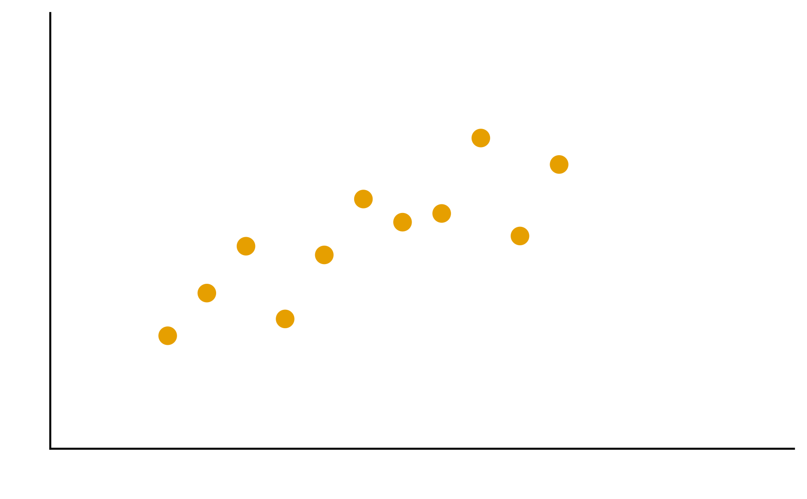 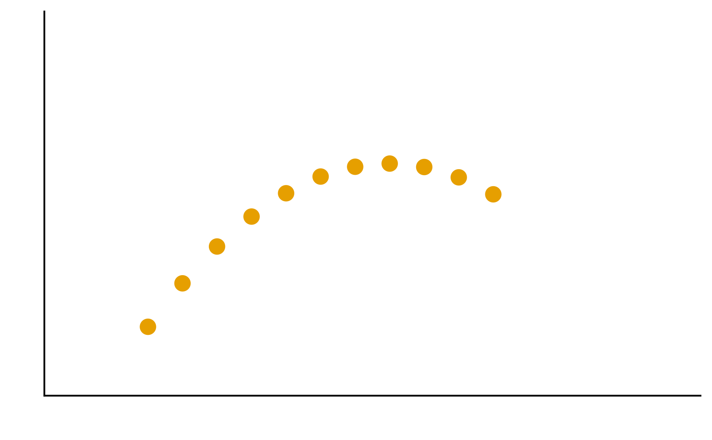 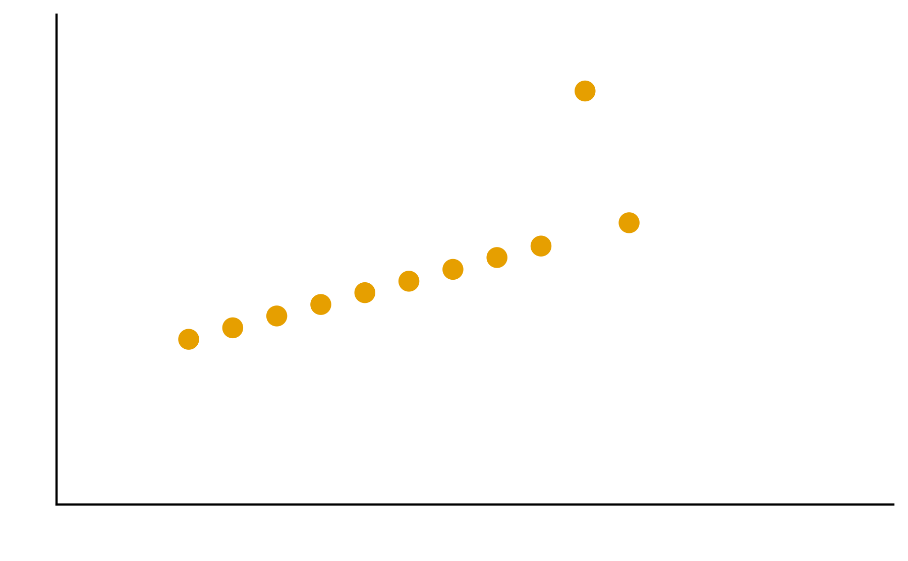 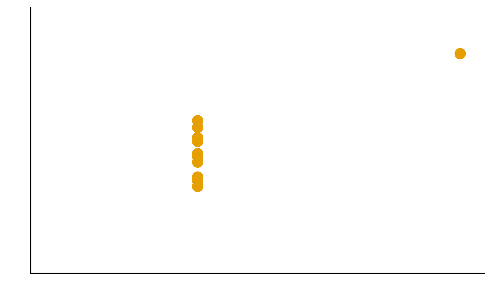
Encodings
Some visual estimations are easier to make than others. How might you use encodings that are less accurate but otherwise better at conveying overall trends?
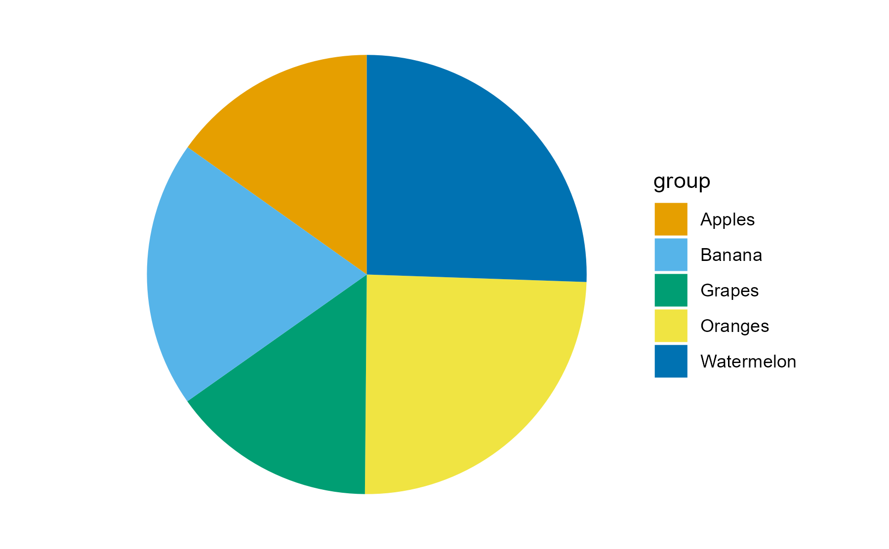 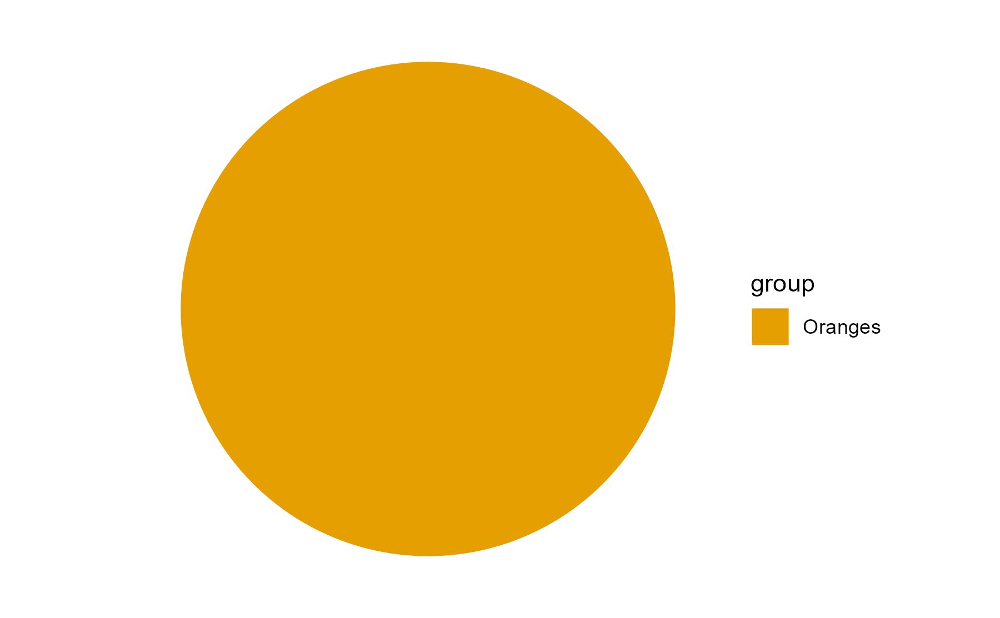 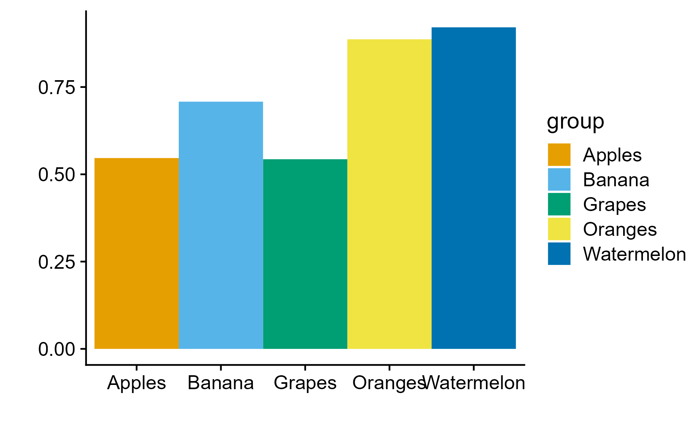
Color
Color is a powerful encoding that presents several challenges. Have you chosen a color scale that is optimal for that data type?
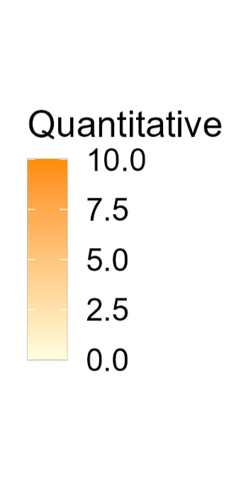 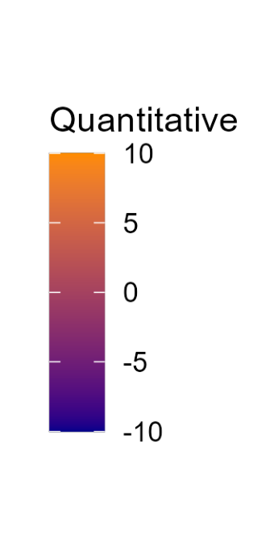 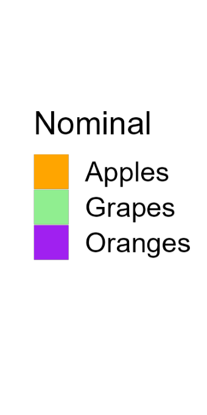 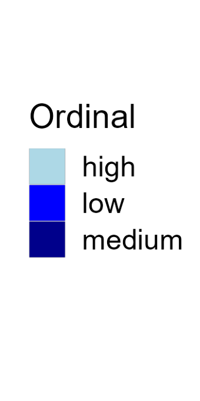
Salience and Relevance
Pop-out effects enable quick recognition. Are the most noticeable elements of your visualizations also the most relevant?
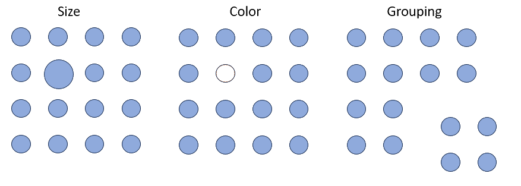
Exercise 3: ggplot exercise
For this exercise we’ll be using the instructional dataset. Download the dataset here.
In this worksheet, we will discuss a core concept of ggplot, the mapping of data values onto aesthetics.
We will be using the R package tidyverse, which includes ggplot() and related functions.
Copy the following code chunk into your quarto document. Notice the error in the read_csv() line - it wants you to supply the file name to read. Fix the error!
library(tidyverse) # load the tidyverse library
# we want to use the data in the visit_clinical_measurements file
clinical_measurements <- read_csv() # read in your data 02_visit_clinical_measurements.csvError in read_csv(): argument "file" is missing, with no default#then show the first few rows
head(clinical_measurements)Error: object 'clinical_measurements' not foundBasic use of ggplot
In the most basic use of ggplot, we call the ggplot() function with a dataset and an aesthetic mapping (created with aes()), and then we add a geom, such as geom_line() to draw lines or geom_point() to draw points.
Try this for yourself. Map the column ph onto the x axis and the column crp_blood onto the y axis, and use geom_line() to display the data.
Whenever you see ___ in the code below, that means you should swap it in with your own code.
ggplot(clinical_measurements, aes(x = ___, y = ___)) +
___()Try again. Now use geom_point() instead of geom_line().
ggplot(clinical_measurements, aes(x = ___, y = ___)) +
___()And now swap which column you map to x and which to y.
ggplot(clinical_measurements, aes(x = ___, y = ___)) +
___()More complex geoms
You can use other geoms to make different types of plots. For example, geom_boxplot() will make boxplots. For boxplots, we frequently want categorical data on the x or y axis. For example, we might want a separate boxplot for each month. Try this out. Put nugent_score on the x axis, ph on the y axis, and use geom_boxplot().
ggplot(clinical_measurements, aes(x = ___, y = ___)) +
___()Now try swapping the x and y axis geom_jitter()
ggplot(clinical_measurements, aes(x = ___, y = ___)) +
___()Now try swapping the x and y axis
ggplot(clinical_measurements, aes(x = ___, y = ___)) +
___()Adding color
Try again with geom_jitter(), this time using ph as the location along the y axis and arm for the color. Remember to check the ggplot cheat sheet, or type ?geom_jitter() in the console to and look at the “Aesthetics” section if you get stuck.
ggplot(clinical_measurements, aes(x = ___, y = ___)) +
___()(Hint: Try adding size = 3 as a parameter to the geom_jitter() to create larger points.)
Using aesthetics as parameters
Many of the aesthetics (such as color, fill, and also size to change line size or point thickness) can be used as parameters inside a geom rather than inside an aes() statement. The difference is that when you use an aesthetic as a parameter, you specify a specific value, such as color = "blue", rather than a mapping, such as aes(color = arm). Notice the difference: Inside the aes() function, we don’t actually specify the specific color values, ggplot does that for us. We only say that we want the data values of the arm column to correspond to different colors. (We will learn later how to tell ggplot to use specific colors in this mapping.)
Try this with the boxplot example from the previous section. Map arm onto the fill aesthetic but set the color of the lines to "navyblue".
ggplot(clinical_measurements, aes(x = ___, y = ___)) +
___()Now do the reverse. Map arm onto the line colors of the boxplot, but will the box with the color "navyblue".
ggplot(clinical_measurements, aes(x = ___, y = ___)) +
___()Great, that’s all for now! If you are done, put a yellow sticky note on your laptop!
Exercise 4: Data wrangling 2
In this exercise, we will continue with basic data manipulations, now moving on to grouping and summarizing, making data tables wider or longer, and joining data tables.
We will be using the R package, tidyverse for the data manipulation functions %>%, group_by(), summarize(), pivot_wider(), pivot_longer(), and join functions such as left_join()
Paste the following into the top code chunk of your qmd file.
Download the data files from the dataset page and place all 5 files into this directory.
Paste the following code chunk into a new qmd file in this project:
library(tidyverse)
table_01 <- read_csv("01_participant_metadata.csv")
table_02 <- read_csv("02_visit_clinical_measurements.csv")Analyzing subsets
In many data analysis settings, we want to break a dataset into subsets and then perform some summary calculation on each subset. The simplest example is counting, which we have done previously with the count() function.
```{r}
table_01 %>%
count(arm)
```# A tibble: 2 × 2
arm n
<chr> <int>
1 placebo 23
2 treatment 21This function subdivides the penguins dataset into subsets for each species and then calculates the number n for each subset, which is the number of observations in each subset.
The function count() here does all the work for us, but what if instead of counting we wanted to calculate the mean weight of the penguins for each species, or calculate the mean weight and count at the same time? We need a general framework that allows us to do these kinds of calculations with maximum flexibility.
The tidyverse approach is to first group a dataset with group_by() and then to calculate grouped summaries with summarize().
Grouping
Let’s first consider just grouping. If we look at the raw R output of just the penguins table or the penguins table after running it through group_by(arm), we see that the table is the same, except in the second case there is a line # Groups: arm [2] which indicates that the table is grouped by arm and there are two groups. (Here, we need to pipe the tables into the print() function to see the raw R output instead of a formatted table that would hide the grouping information.)
table_01 %>%
print()# A tibble: 44 × 6
pid arm smoker age education sex
<chr> <chr> <chr> <dbl> <chr> <chr>
1 pid_01 placebo non-smoker 26 grade 10-12, matriculated Female
2 pid_02 placebo smoker 33 grade 10-12, matriculated Female
3 pid_03 placebo smoker 30 post-secondary Female
4 pid_04 placebo non-smoker 34 grade 10-12, not matriculated Female
5 pid_05 treatment non-smoker 29 grade 10-12, matriculated Female
6 pid_06 placebo smoker 34 post-secondary Female
7 pid_07 placebo non-smoker 31 grade 10-12, not matriculated Female
8 pid_08 placebo smoker 30 grade 10-12, not matriculated Female
9 pid_09 treatment non-smoker 35 grade 10-12, not matriculated Female
10 pid_10 treatment non-smoker 32 less than grade 9 Female
# ℹ 34 more rowstable_01 %>%
group_by(arm) %>%
print()# A tibble: 44 × 6
# Groups: arm [2]
pid arm smoker age education sex
<chr> <chr> <chr> <dbl> <chr> <chr>
1 pid_01 placebo non-smoker 26 grade 10-12, matriculated Female
2 pid_02 placebo smoker 33 grade 10-12, matriculated Female
3 pid_03 placebo smoker 30 post-secondary Female
4 pid_04 placebo non-smoker 34 grade 10-12, not matriculated Female
5 pid_05 treatment non-smoker 29 grade 10-12, matriculated Female
6 pid_06 placebo smoker 34 post-secondary Female
7 pid_07 placebo non-smoker 31 grade 10-12, not matriculated Female
8 pid_08 placebo smoker 30 grade 10-12, not matriculated Female
9 pid_09 treatment non-smoker 35 grade 10-12, not matriculated Female
10 pid_10 treatment non-smoker 32 less than grade 9 Female
# ℹ 34 more rowsWe can also group by multiple data columns at once, and we can undo any grouping with ungroup().
table_01 %>%
group_by(arm, education) %>%
print()# A tibble: 44 × 6
# Groups: arm, education [8]
pid arm smoker age education sex
<chr> <chr> <chr> <dbl> <chr> <chr>
1 pid_01 placebo non-smoker 26 grade 10-12, matriculated Female
2 pid_02 placebo smoker 33 grade 10-12, matriculated Female
3 pid_03 placebo smoker 30 post-secondary Female
4 pid_04 placebo non-smoker 34 grade 10-12, not matriculated Female
5 pid_05 treatment non-smoker 29 grade 10-12, matriculated Female
6 pid_06 placebo smoker 34 post-secondary Female
7 pid_07 placebo non-smoker 31 grade 10-12, not matriculated Female
8 pid_08 placebo smoker 30 grade 10-12, not matriculated Female
9 pid_09 treatment non-smoker 35 grade 10-12, not matriculated Female
10 pid_10 treatment non-smoker 32 less than grade 9 Female
# ℹ 34 more rowstable_01 %>%
group_by(arm, education) %>%
ungroup() %>%
print()# A tibble: 44 × 6
pid arm smoker age education sex
<chr> <chr> <chr> <dbl> <chr> <chr>
1 pid_01 placebo non-smoker 26 grade 10-12, matriculated Female
2 pid_02 placebo smoker 33 grade 10-12, matriculated Female
3 pid_03 placebo smoker 30 post-secondary Female
4 pid_04 placebo non-smoker 34 grade 10-12, not matriculated Female
5 pid_05 treatment non-smoker 29 grade 10-12, matriculated Female
6 pid_06 placebo smoker 34 post-secondary Female
7 pid_07 placebo non-smoker 31 grade 10-12, not matriculated Female
8 pid_08 placebo smoker 30 grade 10-12, not matriculated Female
9 pid_09 treatment non-smoker 35 grade 10-12, not matriculated Female
10 pid_10 treatment non-smoker 32 less than grade 9 Female
# ℹ 34 more rowsNow try this yourself. Group the table_01 dataset by education_level and smoker.
table_01 %>%
___ %>%
print()Answer for yourself How many distinct groups did this produce?
Now undo the previous grouping.
```{r}
# build all the code for this exercise
```Also verify what the output looks like when you omit the print() function at the end.
Performing summaries
Once we have set up a grouping for a data table, we can then calculate summary data with the summarize() function. This function works similarly to mutate(), in that we provide it with statements of the form <new column name> = <computation>, where <new column name> stands for the name of the new column that is being created and <computation> stands for the computation that is used to generate the values in the new column.
As an example, using table_02 we want to calculate the median ph of participants, by arm, we could write summarise(median_ph = median(ph)), and this would create a new column called median_ph
Try this out. First group by arm and then make the new column:
table_02 %>%
group_by(____) %>%
summarise(___)Now see what it looks like if you instead group by timepoint
table_02 %>%
group_by(____) %>%
summarise(___)Now try grouping by both timepoint and arm
table_02 %>%
group_by(__, __) %>%
summarise(___)We can perform multiple summaries at once by adding more statements inside the summarise() function, separated by a ,. To try this out, calculate the median nugent in addition to the median ph
table_02 %>%
group_by(____) %>%
summarise(___, ___)When performing summaries, we often want to know how many observations there are in each group (i.e., we want to count). We can do this with the function n(), which inside summarise() gives us the group size. So, we can count by adding a statement such as count = n() inside `summarise(). Try this out.
table_02 %>%
group_by(____) %>%
summarise(___, ___)Making tables wider or longer
For efficient data processing, we usually want tables in long form, where each columns is one variable and each row is one observation. However, in some applications, for example when making a table easier to read for humans, a wide format can be preferred. In a wide format, some variables are displayed as column names, and other variables are distributed over multiple columns.
First, make a summary table that shows median ph by arm and time_point, just like you did above, and save it to a variable ph_summary_long
ph_summary_long <- table_02 %>%
group_by(___) %>%
summarise(___)Now, try using pivot_wider() to make a column for each arm. Remember, use ?pivot_wider if you want help, and try asking google or chatGPT if you get stuck.
ph_summary_long %>%
pivot_wider(____)What if you wanted to instead make a column for each time point, and have the arms be different rows?
ph_summary_long %>%
pivot_wider(____)Combining datasets with joins
Finally, we sometimes encounter the situation where we have two data sets that contain different pieces of information about the same subjects or objects, and we need to merge these tables for further analysis. In this situation, we need to perform a join, and there are multiple different types of joins available: left_join(), right_join(), inner_join(), full_join(). These joins all differ in how they handle cases where an observation is present in only one of the two tables but missing in the other.
Our instructional dataset has no missing values, so all types of joins are actually equivalent. Try to join table_01 and table_02 using left_join()
```{r}
# join table_01 and table_02
```Advanced next steps
Join together the cytokine data and the metadata and explore the relationships between timepoint, arm, and the different cytokines.
Note, to do this you will need to use 00_sample_ids.csv, 01_participant_metadata.csv, and 03_elisa_cytokines.csv .
Also look at the relationship of vaginal pH to the different cytokines. Now you’ll need to join the 02_visit_clinical_measurements.csv table as well.